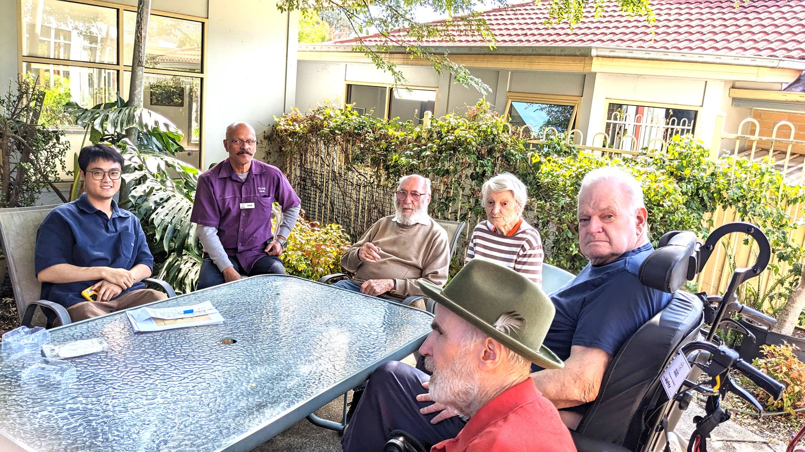
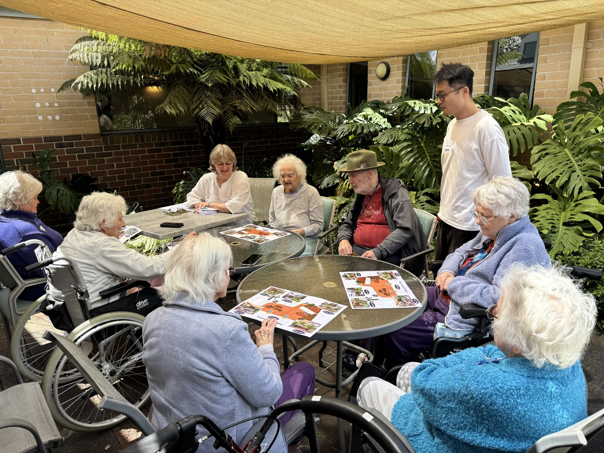
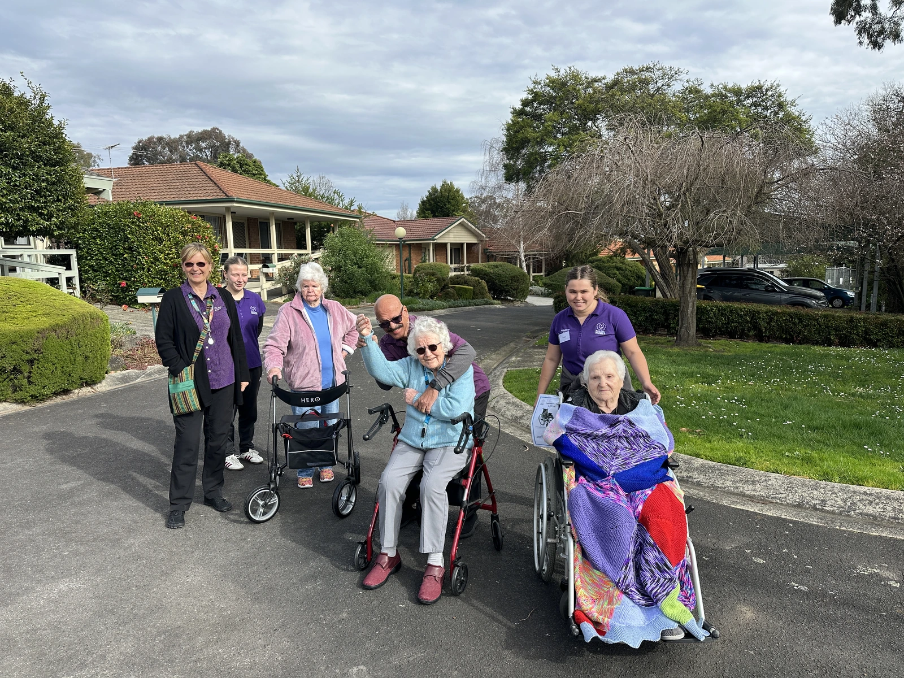

Research / PhD in DesignDesigning meaningful connections
Designing meaningful connections
with the outdoors.
Four studies exploring how design can support older adults’ outdoor engagement in residential aged care, through making, gardening, discovery and storytelling.

Outdoor Nativity Scene
Making and decorating together, connecting residents’ individual contributions with a shared outdoor Nativity scene.

Our Gardening Club
Choosing, planting and caring for plants together, exploring sensory experiences and connections across indoor and outdoor spaces.

Outdoor Discovery
Using maps, nature cards and birdsong to invite curiosity, recognition and shared conversations about garden life.

Our Outdoor Stories
Connecting garden walks with plant choices, personal stories and shared displays that can be revisited indoors.